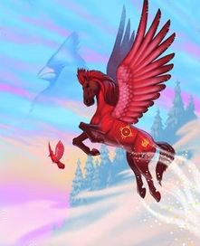

Potawatomi
"Your cheerful heart brightens the day for everyone around you."

- Potawatomi is named for the Native American tribe that inhabited the Great Lakes region of North America before Europeans settled the area.
- Potawatomi is an air horse with bright red coat, as distinctive as the plumage of his animal companion, the cardinal.
- Potawatomi is shown flying up from a snow field with cardinal, as in the sky a mystic image of cardinal appears.
Potawatomi's message involves the positive effect of a positive attitude. Thinking about what's good and fun, rather than being worried and sad, lifts others' spirits. Try to give others the gift of your good cheer.